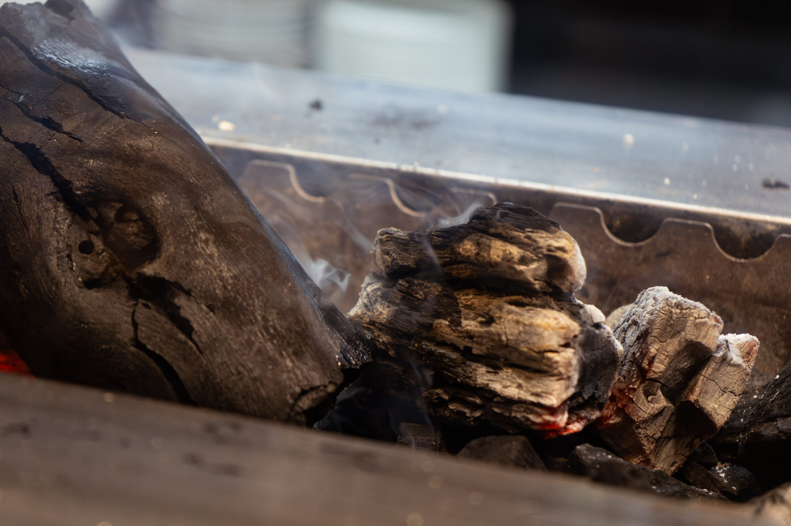

Back to home
Discover Robata, the traditional Japanese grill

Our menu
Our Robatayaki and sushi menu brings together the tradition of slow Japanese grilling with the freshness and elegance of sushi. An experience that pairs the rich flavour of perfectly grilled ingredients with the delicacy of expertly prepared nigiri, sashimi and maki.
PDF menus are available in Italian.